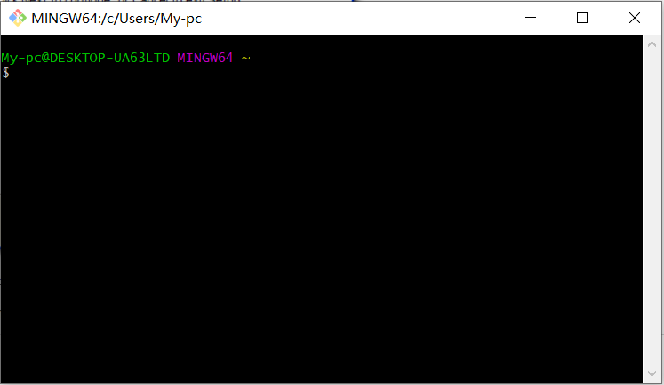

{{ value.name }}
Git是Linus Torvalds为了帮助管理Linux内核开发而开发的一个开放源码的版本控制软件。不同于SVN，
它是一个开源的分布式版本控制系统。
开源的特性让众多的社区高手可以加入Git的编写当中，从世纪之处发展到现在，Git事实上已经成为世界上最先进的分布式版本控制系统，
被用于敏捷高效地处理任何或小或大的项目。
Git的使用与现代图行化交互不同，它的使用要输入许多的命令行。繁琐的交互方式好像使得它相对于手动保存毫无优势，但无论是大型的编程项目还是
多人合作的文档，我们总是会遇到下列问题:
显然，原始的手动保存在稍显规模的项目中存在的诸多弊病，因此一个版本管理工具就显得尤为必要。
由于时间有限，且不是全部功能需要使用到。所以本着万事从简的准则，只是挑选了一些必要功能和配置进行说明
无脑next就行，开源软件也不需要破解，安装路径无要求 点击下载Git  安装成功后点击菜单中的Git Bash，应该会出现上图。
事实上，Git的配置文件有系统级，账户级和文件级三级。作用范围排序为系统级>账户级>文件级，
优先级排序为系统级<账户级<文件级，在绝大部分情况下，我们只需要配置系统级和账户级的属性即可。
首先，启动Git Bash，配置系统级。输入以下命令，配置系统属性
//姓名最好是自己的真实姓名
git config --system user.name '操作者姓名'
//例子如下
git config --system user.name '马老师'
//邮箱最好是自己的Github的注册邮箱
git config --system user.name '操作者email'
//例子如下
git config --system user.email '1314520@qq.com'
账户属性默认配置也很简单，输入以下命令（怎么登录Github请参考Github入门篇）
git config --global user.name '操作者姓名'
//例子如下
git config --global user.name '马老师'
git config --global user.name '操作者email'
//例子如下
git config --global user.email '1314520@qq.com'
配置完以后，下次不登陆账号，提交代码时自动默认配置的姓名和邮箱，登录账户后提交代码时默认账户配置的姓名和邮箱
Git由于是Linus编写的，其默认的编辑器也是Linux系统默认的Vim编辑器，该编辑器功能强大，
但命令实在过于复杂，在初学阶段，可以将其换为其他图形化操作的文本编辑器。
使用以下命令，切换文本编辑器
git config --global core.editor " "文本编辑器绝对路径" -multiInst -notabbar -nosession -noPlugin"
//例子如下
git config --global core.editor " "D:/Notepad++/notepad++.exe" -multiInst -notabbar -nosession -noPlugin"
//查看系统级配置文件
git config --system -l
//查看账户级配置文件
git config --global -l